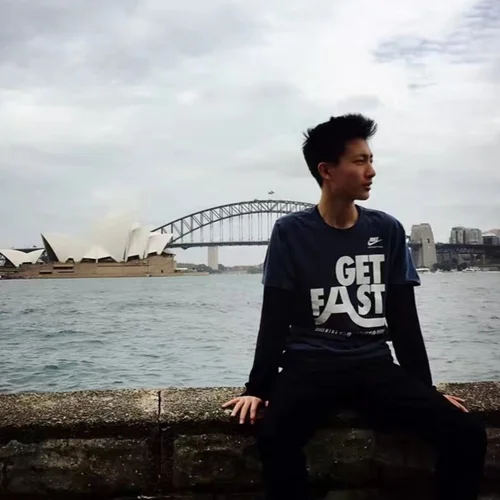
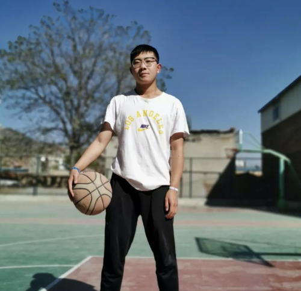
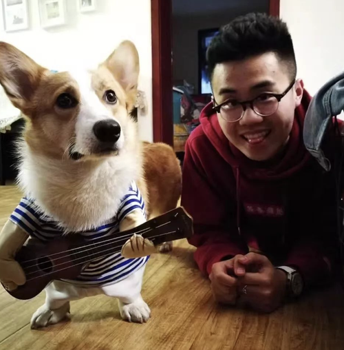
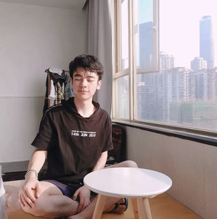
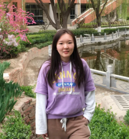
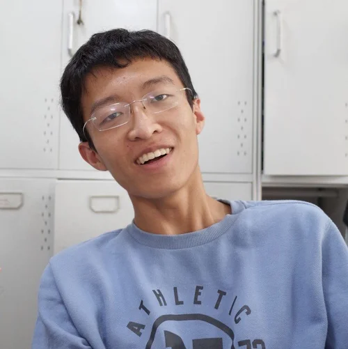

Undergraduate Student Testimonials

Student S
Offer(s): University of Texas at Austin; University of Illinois Urbana-Champaign; Northeastern University; Ohio State University; Purdue University; University of Washington; University of Minnesota, Twin Cities; Indiana University Bloomington; Pennsylvania State University; Northeastern University
GPA: 3.8+
TOEFL: 100+
“My high school years took an unexpected turn when I transferred to a high school in the US during the second semester of my sophomore year. Joining a new school community at such a crucial time was a pretty big deal for me. If I had to pick three words to describe myself, they’d be ‘outgoing,’ ‘fortunate,’ and ‘diligent.’ These traits really came into play during this time, especially since my standardized test scores weren’t exactly top-notch. But somehow, my college application process was surprisingly smooth. I guess a bit of luck and some amazing help from my AUCTA consultants made all the difference.
Honestly, my application season felt like a rollercoaster ride. The AUCTA consultants were amazing — they weren't just consultants but more like mentors and friends. They were always there to listen to my worries and help me find a way through them. Their support is a big reason I’ve gotten this far. When I got the offer from Northeastern University, my dream school, I was over the moon! Knowing how tough the competition was and that some of my friends didn’t make it in, I felt even more grateful. Getting this first acceptance letter was a huge confidence boost. It felt like a validation of my goals and dreams and gave me a sense of excitement for what was ahead.”

Student YJ
Offer(s): University of Notre Dame; Carnegie Mellon University; Georgetown University; University of Southern California; University of Florida; University of California, Santa Barbara; University of Texas at Austin - McCombs School of Business; University of California, Davis; Northeastern University.
SAT: 1500+
TOEFL: 110+
“Picking my major was a bit of a journey, and Lu was a huge help. I ended up going for Business/Economics, mostly because it’s a world away from what my parents know – they’re both in the medical field. Lu saw I was getting into the field and really encouraged me to soak up everything I could about it. He even helped me draft an economics reading list and assisted with my applications to some related academic programs. Participation in these programs gave me a pretty solid intro to the business world and kind of sealed the deal on my major choice. But hey, I’m still figuring things out, so who knows where I’ll end up.
Writing my application essays was tougher than I expected, especially in the beginning when it was all about choosing topics and brainstorming ideas. I kept running into clichés and broad, unoriginal ideas. But then Aube, my essay consultant, came to the rescue. We had four really intense brainstorming sessions together. Being a writer herself, Aube had this amazing ability to find the interesting nuggets in the most ordinary things. She guided me in discovering unique perspectives for my essays, making them truly reflect who I am.
The biggest highlight of my application season was definitely getting accepted into Georgetown University in December. Then came Notre Dame University, which was not only exciting because it ranks in the top 20 but also because they offered me a scholarship. This felt like a huge acknowledgment of all the effort I had put in.”

Student Tim
Offer(s): University of Rochester; University of Illinois Urbana-Champaign; Boston University; Ohio State University; Syracuse University; University of Pittsburgh; University of Minnesota Twin Cities; University of Connecticut
GPA: 3.7+
TOEFL: 100+
“Honestly, my standardized test scores weren’t exactly stellar. I had a decent GPA, just over 3.7, and my TOEFL was a bit above 100. But what really clinched my admission to a top university in the US was AUCTA’s compelling essays, excellent extracurricular planning, and detailed interview prep.
I'll admit I can be a bit detached and sometimes struggle to find motivation if a project topic doesn’t catch my interest. However, the extracurricular activities provided by AUCTA were quite engaging. They drew me in naturally, inspiring me to focus and invest the necessary effort to ensure everything was executed perfectly. AUCTA's consultants also prepped me for interviews, holding mock sessions that were super helpful. I can't stress enough how important it is for students to prepare for these interviews. Making a strong first impression on university interviewers can really make a difference. The AUCTA consultants were great at helping me play to my strengths and work around my weaknesses.
One evening during winter break, I got an offer from the University of Rochester, a school ranked in the top 50 globally. I was overjoyed, excited, and grateful – it was a mix of all these emotions. That offer felt like a big nod to my academic journey and experiences from a dream school.”

Student Richard
Offer(s): Emory University (Early Decision)
IB Predicted Score: 39+/42
TOEFL: 110+
“Initially, I didn’t have a specific dream school in mind, mostly because the COVID-19 pandemic prevented me from visiting campuses. But then Lu stepped in. He thoroughly analyzed my academics, extracurriculars, and overall profile, offering me some valuable advice. After several discussions, we settled on applying ED to Emory University.
Choosing Emory wasn’t just about its excellent academic reputation and rankings. It was also about how well it matched my personality. I was drawn to Goizueta Business School because of its student-friendly environment. I knew I wouldn’t do well in some top universities' super competitive, high-pressure settings. Based on feedback from Emory alumni and info from AUCTA’s consultants, Emory seemed like the perfect place for a good balance between academic life and personal growth and really felt like the right fit for me.
The biggest challenge with my application was figuring out what set me apart from other candidates. This took a lot of brainstorming and introspection, and the weekly brainstorming sessions with AUCTA’s consultants on the topic ‘Who am I?’ were invaluable. The consultants gave me continuous, straightforward, and constructive feedback on my essays, helping me pinpoint areas for improvement. Thanks to Lu and Aube’s help, I managed to polish my essays to a standard I was really happy with, just in time for the ED deadline.”
Student Yu
Offer(s): New York University (Early Decision)
SAT: 1490
TOEFL: 113
“I can still vividly recall the pounding of my heart on the afternoon of December 15th at 4 PM as I anxiously awaited my ED admissions result. When I finally saw the words ‘it is my honor and privilege,’ it was like a huge weight lifted off my shoulders, affirming that all my hard work had paid off.
The journey to applying to U.S. universities turned out to be more complex and challenging than I initially thought. It wasn’t just about nailing standardized tests. There are essays to craft, activities to participate in, recommendation letters to gather, and so much more. While I had my parents’ emotional backing throughout this rigorous process, the invaluable assistance I received came from AUCTA. My main consultant, Lu, was an incredible source of motivation and guidance, and my assistant consultant, Huang, paid close attention to every detail of the process. Their invaluable support played a pivotal role in the success of my application. I am deeply thankful for their dedication and efforts in helping me achieve this significant milestone!”

Student Zhang
Offer(s): Dartmouth College; Northwestern University; University of California, Los Angeles; University of Southern California; University of North Carolina at Chapel Hill; New York University; University of California, San Diego
SAT: 1540
TOEFL: 113
“The college application season turned out to be a profoundly enlightening experience for me, with writing personal statements and deep self-reflection being the most impactful parts. Unpacking the reasons and motivations behind my achievements and tracing their origins was incredibly fulfilling. During Regular Decision, I spent New Year’s Eve at my computer, collaborating remotely with my AUCTA consultants to refine my essays.
The anticipation building up to Ivy Day was particularly intense. Clinging to the hope that "the best is yet to come" proved challenging despite the reassurances from my consultants. However, the most exhilarating part of the application process was undoubtedly when the admission offers began arriving. Experiencing that sense of validation upon being chosen by these prestigious institutions and then having the privilege to choose among them was an incredible feeling. Over time, I grew more comfortable with the outcomes, firmly adopting the mindset of ‘if I got it, I deserve it; if I don’t, I accept it.’”

Student Zhang
Offer(s): New York University (Early Decision)
SAT: 1430
TOEFL: 107
“Two years ago, I had no idea how the US college application process worked. It all started when I randomly attended a lecture by Lu and his team of Harvard consultants at the Wanda Vista Hotel. That event was my introduction to AUCTA, an international education consulting team right here in Lanzhou. From the get-go, Lu and his team mapped out every phase of my application journey. Their organized approach was a game-changer, helping me understand exactly what to do at each step and ensuring a seamless, well-structured process.
Later, I met my two overseas consultants, Kyle from Duke and Charlie from Harvard, via Skype. These conversations made me confident that I was backed by the best resources and support. The standout moment for me was when I hit a wall with my essays. Lu invited me over to his office, and we ended up having a casual chat, laughing and brainstorming everything from Lanzhou beef noodles to Guangdong double-skin milk, and from the New York Times to the Lanzhou Evening News. Before I knew it, these chats sparked a fresh angle for my essay. Lu and I spent several days in the same room, revising my essays, fueled by the takeout he kindly ordered, until I finally got my essay to a place I was really happy with. Reflecting on it, I see that it was Lu’s unique method that helped me find my voice and tell my own story in my essays.
This application season with AUCTA is filled with unforgettable memories. I’ve developed friendships with every one of my consultants. I am incredibly thankful for their dedication and guidance on this journey, which ultimately helped me get into my dream university. More than the application result itself, it’s the experience with AUCTA that I value most, one that I believe will benefit me for a lifetime.”

Student Li
Offer(s): University of Florida (Early Decision)
SAT: 1340
TOEFL: 93
“I’ll never forget the day I got accepted into my dream school – I was still in bed when I saw the message pop up in the AUCTA group chat about my acceptance. That news instantly woke me up and set the tone for a fantastic day!
Looking back on my application journey, I’m deeply grateful for the personalized guidance I received from AUCTA. The consultants in our group chat would talk to me daily, constantly offering encouragement and reminding me to stay focused on my academics. Their support really kept me moving forward.
Our essay revision sessions, conducted entirely in English, were incredibly beneficial. They didn’t just enhance my English speaking abilities but also gave me valuable practice in interacting professionally with Americans. Whenever I encountered a challenge, my consultants were quick to provide suggestions, direction, and examples, helping me navigate through any difficulties. I really enjoy engaging in these discussions and asking questions, and this dynamic and interactive method suited me perfectly.”
Student Shi
Offer(s): University of California, Berkeley; University of North Carolina at Chapel Hill; Georgia Institute of Technology; University of California, Irvine; University of California, San Diego; University of California, Davis; University of Illinois at Urbana-Champaign
SAT: 1500
TOEFL: 105
“My application journey with AUCTA has been quite smooth and well-organized. Working with my consultants on my essays and applications has always been a fun and relaxed experience. I really want to take a moment to thank all the incredible teachers at AUCTA for their support. A big shoutout to He, who guided me in making extracurricular plans at the start of my application season and welcomed me into the AUCTA family; Huang, who helped me navigate the complex school selection process; Yang, who tirelessly managed application forms, monitored offers, and did so much more behind the scenes; Mou, who played a crucial role in boosting my TOEFL score; Lu, who went the extra mile by flying to Shenyang for our essay sessions; and, of course, my US essay consultants, Aube and Kevin, for their invaluable insights.”
Student Chen
Offer(s): New York University (Early Decision)
SAT: 1480
TOEFL: 111
“Start your preparations early. If you feel unsure about your test-taking skills, consider taking the tests multiple times, as they sometimes can be unpredictable, and you need to excel in all sections for a good score. An early start gives you that extra chance to improve, and leaving things until the last minute can make you feel rushed and anxious, affecting your performance.
I recommend communicating openly with your AUCTA consultants and seeking their professional advice. It’s also beneficial to do your own research. For example, consider your personal preferences and situation when picking universities, not just the institution’s US News ranking. Think about aspects like the geographical location, your intended major, the overall atmosphere, and other factors that matter to you.”

Student Zhao
Offer(s): New York University - Stern School of Business (Early Decision)
ACT: 35
TOEFL: 111
“Before connecting with AUCTA, I was initially working with a smaller study abroad agency on my college applications. Unfortunately, they weren’t very responsive, which caused concern for my family and me. Worried that the delays on their end might negatively impact my applications, we made the decision to switch to AUCTA.
This turned out to be a game-changer for my application essays. The consultants at AUCTA were instrumental in deepening my exploration of the essay topics. We went through numerous revisions, each time refining and probing further. We aimed to strike a balance in my essays, showing that, although I’m primarily focused on business-related activities, I wasn’t just pursuing them for monetary or practical benefits.
During the essay revision process, there were times when I felt tired of rereading my own words, but the commitment of the AUCTA consultants never faltered. They meticulously reviewed and dissected every part of my essays, guiding me to enhance them significantly. I am extremely thankful for and deeply moved by their unwavering dedication and support throughout my application process.”
Student JF
Offer(s): University of California, Los Angeles; University of California, Berkeley; University of California, Irvine; University of Texas at Austin; Boston University; Northeastern University
SAT: 1510
TOEFL: Not Applicable
“AUCTA has been incredibly helpful throughout my college application process, offering guidance from the initial planning stages right through to the final steps. The AUCTA essay team, particularly Aube and Lilian, paid close attention to every detail. They were instrumental in my essay writing, skillfully combining my personal background, activities, and interests to spark inspiration and provide insightful editing suggestions. The reading sessions with Aube, in particular, not only bolstered my essay-writing skills but also strengthened my SAT preparation.
Additionally, during the summer, AUCTA recommended several education prep programs that aligned perfectly with my academic goals, including a research project at UCSB and two summer programs at UPenn Wharton. Engaging in these programs provided me with a clearer perspective on my interests and goals for my undergraduate studies.”
Student T
Offer(s): University of Pennsylvania - The Wharton School; Cornell University - SC Johnson College of Business; Rice University (with a $60,000 scholarship); University of California, Los Angeles; University of Texas at Austin.
ACT: 34+
TOEFL: Not applicable.
“The moment I got accepted into UPenn, a school I had always dreamed of attending, was nothing short of magical. I remember feeling an immediate rush of joy when I received the offer, and I couldn’t wait to share the fantastic news with my parents. As the realization of what this meant truly sank in, I found myself overwhelmed with emotion and tears of happiness, a testament to the years of hard work finally paying off.
Throughout my application process, the AUCTA team was incredibly supportive, especially when it came to essay development. Our brainstorming sessions were crucial in helping me explore and articulate why I was drawn to business studies, bringing much-needed clarity to my thought process. My consultants provided insightful suggestions that enabled me to create a narrative that was not only unique to me but also showcased my strengths effectively. Beyond essay writing, AUCTA also offered comprehensive advice on selecting schools and majors, as well as recommending extracurricular activities that aligned perfectly with my interests.”
Student S
Offer(s): Northwestern University (Early Decision)
SAT: 1540
TOEFL: N/A
“In the week leading up to the Early Decision results, my nerves were stretched to the limit; I was so anxious that I found myself unable to eat. When I finally saw the offer from Northwestern, disbelief washed over me. I must have read the first few lines three or four times just to be sure I was really admitted! The release of all that pent-up stress was overwhelming, and I couldn't help but cry for a while.
In the early stages of college application, Lu and Agnes, considering my background and preferences, used their expertise to help me narrow down a list of schools, including Columbia, Cornell, and Northwestern. I’m especially grateful to all the consultants at AUCTA for their diligent review and monitoring of my extracurricular activities. They helped me apply to a faculty-led research project at Princeton, which significantly enhanced my application profile. I also owe a big thank you to Aube for her invaluable assistance in improving my English skills and crafting my application essays.”
Student Cai
Offer(s): University of California, Berkeley; Georgia Institute of Technology; University of North Carolina at Chapel Hill; University of Rochester; University of California, Santa Barbara; University of California, San Diego; University of California, Davis; University of Toronto.
SAT: 1500
Toefl: 111
“I owe a tremendous amount of gratitude to my mom, who has been an unwavering source of support throughout my application process. Her steadfast presence was particularly crucial during moments when I struggled with my own high expectations (which she never imposed).
My appreciation also goes out to all the AUCTA consultants for their extensive support. They assisted with everything from logistical tasks like account registration and score submission to proactive guidance in extracurricular planning and essay writing.
Following the submission of my applications, I’ve been actively engaged in studying AP subjects to keep my mind sharp. I’m also learning Spanish and have picked up hobbies like cooking, driving, and singing. These activities form a key part of my strategy to maintain mental agility and to transition seamlessly into university life with a relaxed yet prepared mindset.”
Student Luo
Offer(s): Lehigh University (Early Decision)
SAT: Not Applicable
TOEFL: 88
“I believe that the essays are the most critical part of my college application. My key piece of advice for everyone is to avoid broad, generic topics. Instead, focus on describing a specific event or experience. Often, these detailed narratives carry more significance than expansive, abstract ideals. My AUCTA essay advisor was extremely helpful, scrutinizing every sentence and word. Our discussions about my thought process were not only enjoyable but also incredibly productive.
After I submitted my applications, AUCTA connected me with alumni for additional guidance on how to communicate effectively with schools, which significantly enhanced my understanding of the application process.
To the future AUCTA students: I recommend setting your goals early. Start working on standardized tests, get involved in activities, and, most importantly, begin your essay-writing process well in advance. Essays are a key component, and last-minute rushes to find inspiration under tight deadlines can be stressful and unproductive. I hope everyone finds the university that fits them best!”

Student Zhang
Offer(s): Georgetown University (Early Decision)
SAT: 1470
TOEFL: 107
“AUCTA’s interactive essay guidance has been a game-changer for me. The voice calls with my US essay consultants were a really efficient way to practice my English writing and speaking skills. I remember our first call lasted over an hour, and honestly, my speech was a bit all over the place with some grammar mistakes. But instead of feeling discouraged, I saw it as a chance to grow. Over time, this approach paid off, and I gradually noticed an improvement in my communication skills.
Upon receiving my Georgetown offer, I took another look at my essays and recognized the lengthy nature of the essays, which I once saw as a burden, was actually a blessing. They provided ample space for me to thoroughly articulate my thoughts, collectively portraying my personal development.
An admission offer marks the start of a new journey, not the conclusion of one. It's the experiences and personal growth we encounter throughout our high school years that truly shape who we are.”

Student Zhao
Offer(s): New York University - Stern School of Business (Early Decision)
SAT: 1550
TOEFL: 114
“I am immensely grateful to all the devoted consultants at AUCTA. Their guidance played a crucial role in helping me achieve favorable admissions results in a remarkably short and intense application period of less than a month. I want to extend my special thanks to Yang for her diligence and responsibility and to Lu and Aube for their comprehensive support in strategizing my school list, refining my essays, and monitoring the Common Application process.
In addition, I would like to express my gratitude to my school counselor, Ms. Zhao, for her care and attention towards every student in our class. My appreciation also goes out to my parents and friends for their continued support and encouragement, which has always been a source of strength.”
Student An
Offer(s): Boston University; Tulane University; University of Illinois at Urbana-Champaign
SAT: 1410
TOEFL: 103
“My journey with AUCTA has been an enriching experience spanning over five years. Lu, more than an educational consultant, has been an essential mentor in my life. Whenever I faced uncertainty or felt directionless about my future studies and career path, he was there to guide me, providing both direction and inspiration.
My bond with AUCTA and Lu has been unshakeable, as they have accompanied me through every major milestone. From the joy of my undergraduate admission offer to the eager anticipation of my first consulting internship, and the initial nerves of stepping into the professional realm as a graduate, they have been a constant presence. I am aware that there are many more significant moments to come, and with AUCTA, the path of personal and professional development is an ongoing journey.”
Student Sun
Offer(s): University of California, Berkeley
SAT: 2170
TOEFL: 111
“To me, the application season was the most transformative time in high school, sparking my passions and offering me a wealth of diverse experiences and insights.
Amid SAT preparations, I was overwhelmed, unsure where to begin with my essays. Lu’s guidance in finding a clear direction was pivotal; without it, completing my essays might have been an impossible mission. I recall vividly the afternoon of October 31st, the day I was putting the final touches on my essays. I was satisfied with my main essay, but the supplemental one still needed more clarity. Right after school, I hurried to Lu’s office for a review session. The room was alive with about a dozen people, all deeply immersed in editing their resumes, activity lists, essays, and submitting scores. Surrounded by scattered lunch boxes and under the early darkness of winter, the room was filled with an intense mix of anxiety and excitement. In that moment, I felt a strong sense that I was moving in the direction I wanted, embracing the uncertainty of the outcome but reassuring that I had given it my all.
Submitting applications to each school was fraught with tension, as I feared making even a minor mistake. The whole application season really tested both my physical endurance and mental stamina. However, at AUCTA, there was a comforting realization that you’re never alone on this journey.”
Student Sun
Offer(s): Rice University; Duke University
SAT: 2180
TOEFL: 109
“Reflecting on the application season, it’s astonishing to think of how swiftly it passed and how much I’ve journeyed with AUCTA. From choosing the right schools at the start to making those final tweaks to my essays, the entire AUCTA team was tirelessly at my side. I recall intense discussions over an essay that led us to revise it seven times. I remember the mock interview sessions with Lu. Then there was the night before the application deadline when the consultants stayed overnight in the office to assist – these memories are etched in my mind.
I can still vividly recall the morning the results came out. The first call I received was from one of the AUCTA consultants, and together, we basked in the joy of success. If I were to liken my application season to an F1 race, I’d be the driver, with AUCTA as the technical crew, working diligently behind the scenes. This race was a test of our collective effort and cooperation. We embarked on this journey together, and it’s one without regrets. My deepest thanks go to my essay advisor. Our two-hour discussion about my essay is a memory that will always stay with me.”
Student Hao
Offer(s): Cornell University; University of California, Los Angeles
SAT: 2180
TOEFL: 109
“Lu’s exceptional ability to be more than just a mentor during the application season, transforming into a friend who maintains a connection afterwards, is truly remarkable. His skill in keeping me grounded, even during moments of pride, and his guidance in fostering self-awareness have been invaluable to me. Throughout the application process, he exhibited a profound sense of responsibility as an educational consultant, a testament to his success despite his young age. This, perhaps, is the most significant lesson or insight he imparts to me.”

Student Xu
Offer(s): Carnegie Mellon University; Emory University; Georgia Institute of Technology
SAT: 2180
TOEFL: 110
“The application season was made particularly enjoyable by the vibrant and insightful discussions with AUCTA’s advisors from around the globe. Faced with an array of essay prompts and looming deadlines, these conversations often sparked creative ideas. We oscillated between laughter and deep discourse, touching on everything from quirky anecdotes and practical application strategies to a fervent interest in entrepreneurship and a positive life outlook.
Initially, I was apprehensive about writing and tended to be wordy in my expression. Yet, through Lu’s patient guidance in revising my essays, I began to hone my writing skills. I learned to organize my thoughts more effectively, leading to clearer, more concise expressions. Another major achievement for me was overcoming procrastination, a habit that could have severely impeded my progress, given the tight timelines. Beyond the successful outcomes of my applications, my most valuable gains were these lifelong skills, as well as the personal and habitual growth I experienced along the way.”

Student Ding
Offer(s): University of California, Los Angeles; University of North Carolina at Chapel Hill; Colby College
SAT: 2160
TOEFL: 110
“This application season, I was thrilled to be accepted into prestigious universities like UCLA, UNC, and Colby. Yet, what stands out more than these remarkable admissions is my interactions with Lu. An afternoon spent in deep conversation with him allowed me to reflect on my experiences, uncover the highlights of my life, gain clarity on my future direction, and craft the essays that were crucial to my success. The late-night emails, filled with meticulously detailed edits, exemplified AUCTA’s dedication that contributed to my success.
Lu’s guidance, his willingness to share his wealth of experiences, and his deep understanding of what makes an essay resonate went beyond merely helping me get into colleges. He taught me the art of application. Through AUCTA, I achieved more than just admission to my dream universities; I underwent a profound personal growth that will undoubtedly enrich my life journey.”